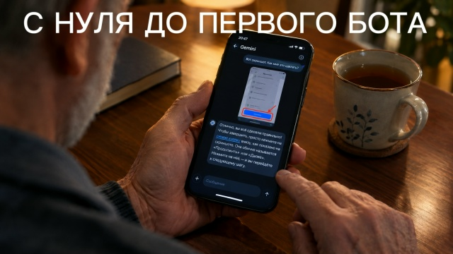

С нуля до первого бота

Всем привет. Обещал рассказать личную историю — как я, полный ноль в технике, настроил себе первого ИИ-помощника. Было это ещё до знакомства с Claude.
Больше полезного про нейросети — простым языком, каждый день в нашей группе ВКонтакте
Перейти во ВКонтакте →Тема ИИ тогда меня уже зацепила — читал статью за статьёй. И в одной из них наткнулся на мысль: собрать бота не так уж сложно, справится и новичок. Решил проверить на себе — смогу ли я, зная ноль, действительно сделать что-то рабочее.
Решил попробовать через сервис Coze. Бот должен был каждое утро присылать мне новости по теме ИИ — чтобы не искать их самому по разным сайтам, а получать уже готовую подборку прямо в чат.
Знаний — ноль, вообще ничего не понимал. Каждый шаг вёл Gemini: скидывал ему скриншот экрана, а он говорил, куда именно нажать. Не просто «нажми сюда» — а конкретно «видишь синюю кнопку внизу справа, с подписью «Продолжить»? Вот на неё». Если кнопка долго грузилась или экран выглядел не так, как он ожидал — тоже спрашивал у него, что делать дальше.
Трудные моменты, конечно, были, и немало. Но я понимал — это я не соображаю, как надо, а не что мне что-то не так объясняют. И вот что заметил: там, где я думал — тупик, ИИ всегда искал обходной путь.
Пару конкретных случаев, которые запомнились сильнее всего:
— Регистрация не проходила. Не мог зарегистрироваться на одном из сервисов — система просто не пускала, писала ошибку. Оказалось, дело в моём местоположении — из-за санкций некоторые сайты блокируют доступ из России. Gemini подсказал конкретный обходной путь, и всё заработало.
— Приложение не скачивалось. Нужное приложение попросту отсутствовало в моём магазине приложений. Вместо того чтобы упереться в тупик, Gemini сразу предложил рабочие аналоги с похожим функционалом — я даже не думал, что такие есть.
— Сайт «не обновлялся». Уже позже, когда я правил статью на своём сайте, изменения просто не отображались в браузере, сколько бы я ни обновлял страницу. Оказалось, дело в кэше браузера — старая версия страницы просто «застряла» в памяти телефона. Помог обычный приватный режим — он показывает сайт заново, без сохранённых старых данных.
Второго и третьего бота собирал уже в разы быстрее — просто запомнил порядок действий и уже почти не спрашивал Gemini на каждом шаге.
Тот первый бот сейчас заброшен — просто не нужен, канал у меня не новостной. Но это было моё знакомство с самой механикой, и опыт того стоил — именно тогда я понял, что «собрать себе бота» — это не миф для программистов, а реально доступная вещь.
Кому Coze пригодится сегодня
Раз обещал быть честным — расскажу, как оно на самом деле сейчас, а не только как было у меня тогда.
Coze с тех пор сильно вырос — в 2026-м это уже не просто «конструктор ботов», а целая рабочая платформа от ByteDance с бесплатным тарифом и доступом к нескольким нейросетям сразу (включая Claude и Gemini) через один интерфейс.
Кому реально подойдёт:
— новичкам — как первый шаг в тему: понять на практике, как вообще работают боты, прежде чем переходить к более сложным ИИ-помощникам
— малому бизнесу — можно быстро собрать бота поддержки клиентов, без найма разработчика. Например, бот, который отвечает на частые вопросы клиентов в Telegram или WhatsApp, пока вы заняты делом
— тем, кому нужно быстро опубликовать бота в Telegram, Discord, WhatsApp или Slack — Coze делает это за пару минут, аудитории не нужно ничего скачивать отдельно
А вот что стоит знать заранее, чтобы не удивляться:
— бесплатный тариф работает на «кредитах» — при активном использовании быстро упрётесь в лимит, и придётся либо ждать, либо переходить на платный
— платформа с августа 2026-го объединяется с другим продуктом ByteDance (Doubao) — это значит, что интерфейс и условия могут ещё не раз поменяться, будьте готовы к переменам
Так что если задача — простой бот и знакомство с механикой, как было у меня, Coze всё ещё хороший вход в тему.
Ну вот и вся история. Хотите себе такого помощника — проснулись утром, а работа уже сделана?
Ещё по теме
Пока я сплю, агент пишет посты
Chevrolet Tahoe за один доллар: как хитрый промт довёл до сделки